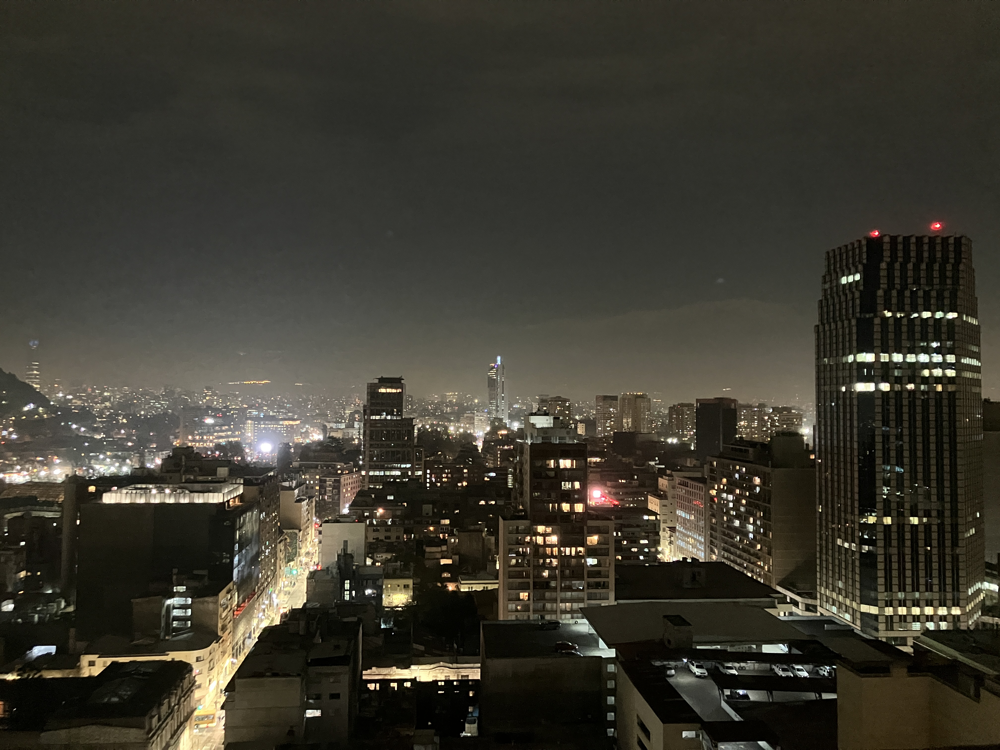
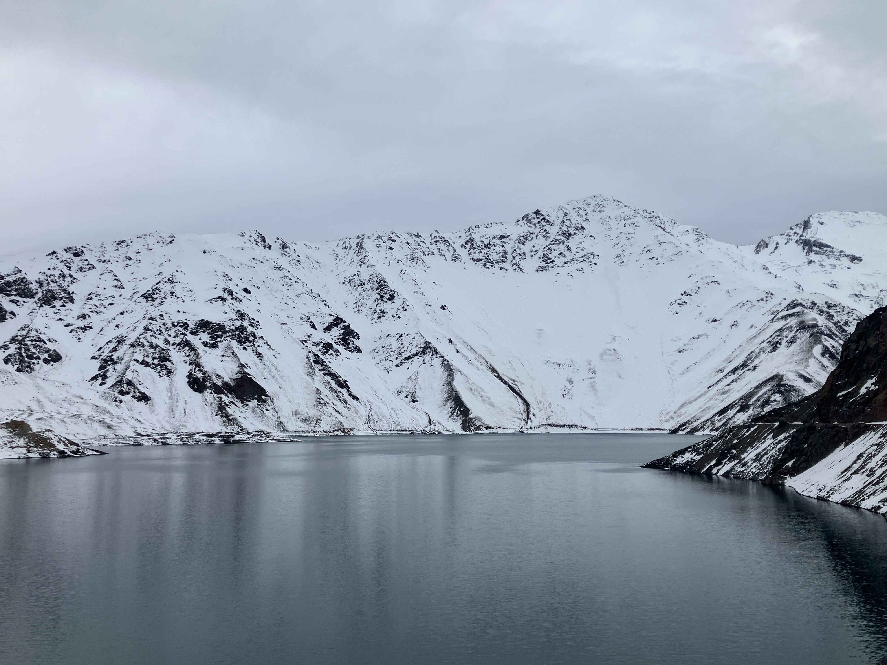
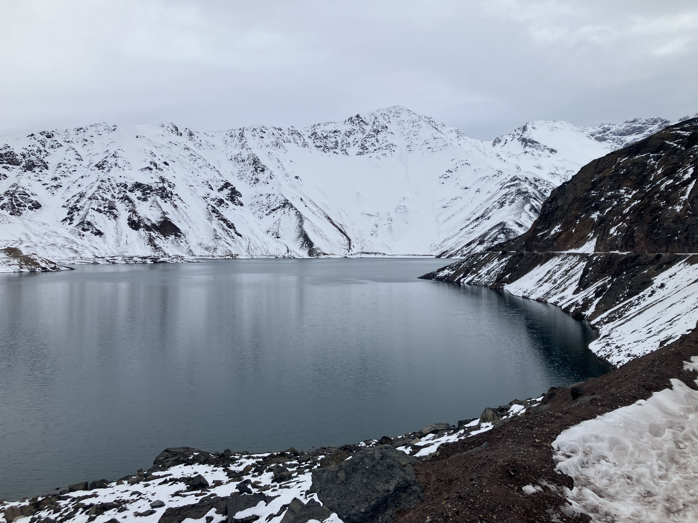
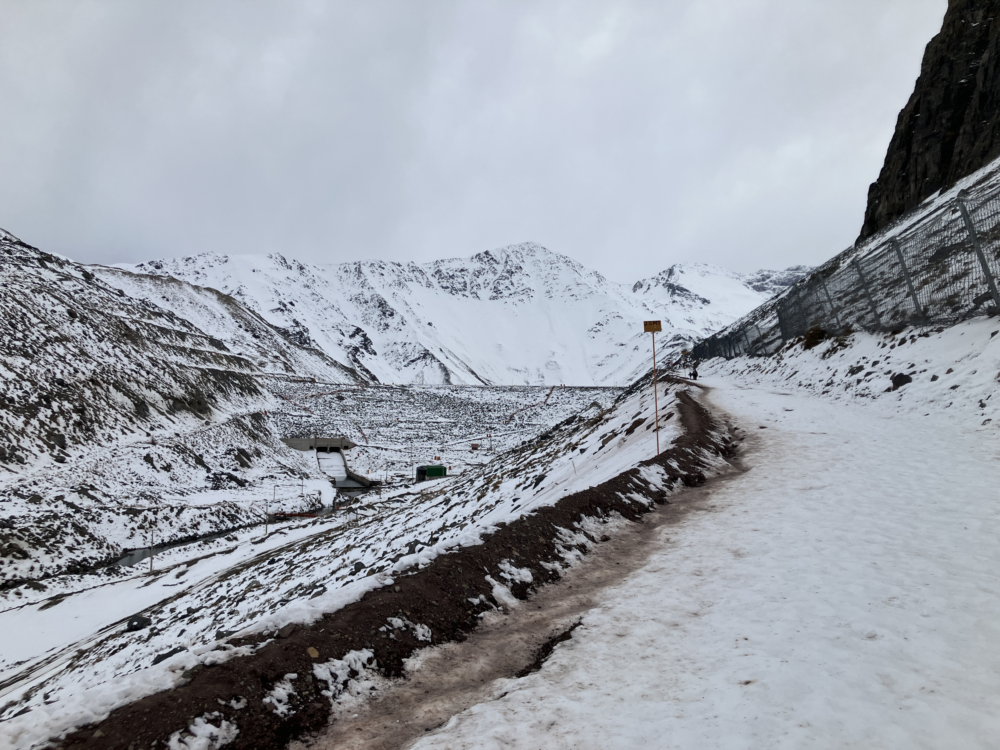
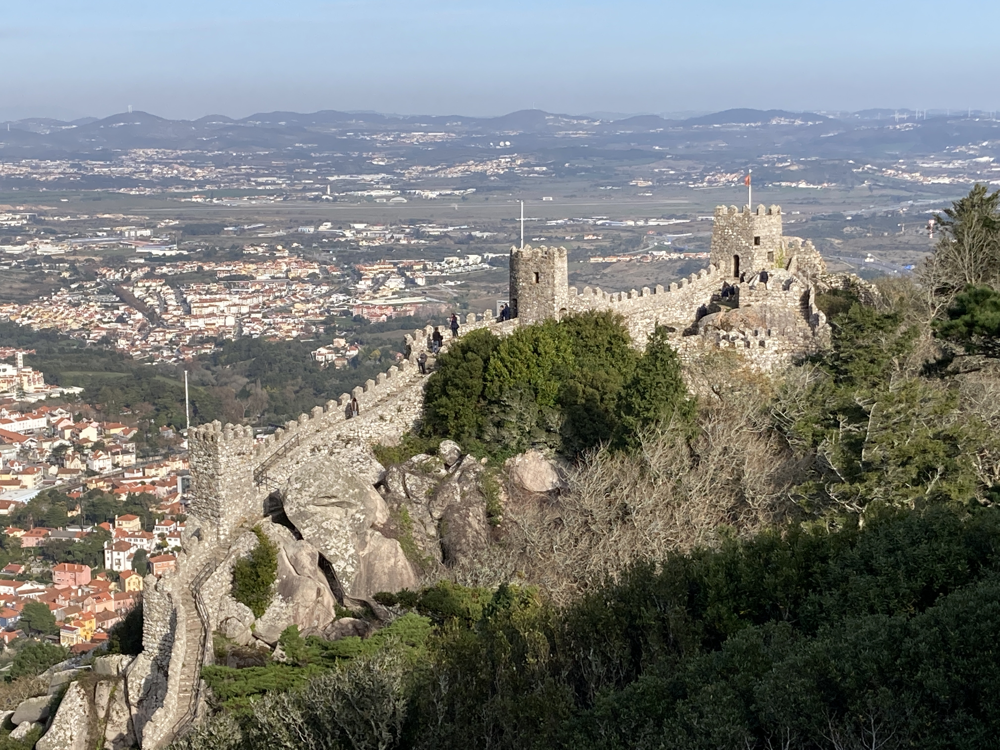
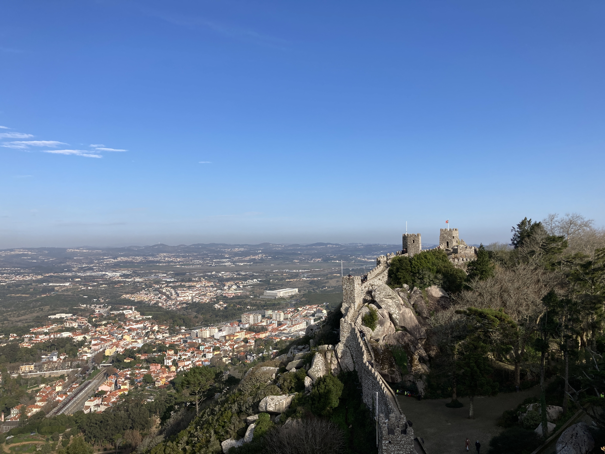

Gallery
Here you can see my photo gallery. And here the Unix rices I made.
All pictures here were taken by myself and are licensed under CC-BY-NC Creative Commons. They're all in their original size, the browser resize them for fitting in the viewport.
Santiago at Night - Santiago, Chile

Cajon del Maipu - Santiago, Chile

Cajon del Maipu (no zoom) - Santiago, Chile

Cajon del Maipu Road - Santiago, Chile

Butterfly - Iguassu National Park, Paraná, Brazil

Arara Brasileira - Foz do Iguassu Bird Park, Paraná, Brazil

Iguassu Waterfalls - Foz do Iguassu, Paraná, Brasil

Iguassu Waterfalls - Foz do Iguassu, Paraná, Brasil

Iguassu Waterfalls - Foz do Iguassu, Paraná, Brasil

Iguassu Waterfalls - Foz do Iguassu, Paraná, Brasil

Atlantic Ocean - Superagui Island, Paraná, Brasil

Mouros Castle - Sintra, Portugal

Mouros Castle (no zoom) - Sintra, Portugal
